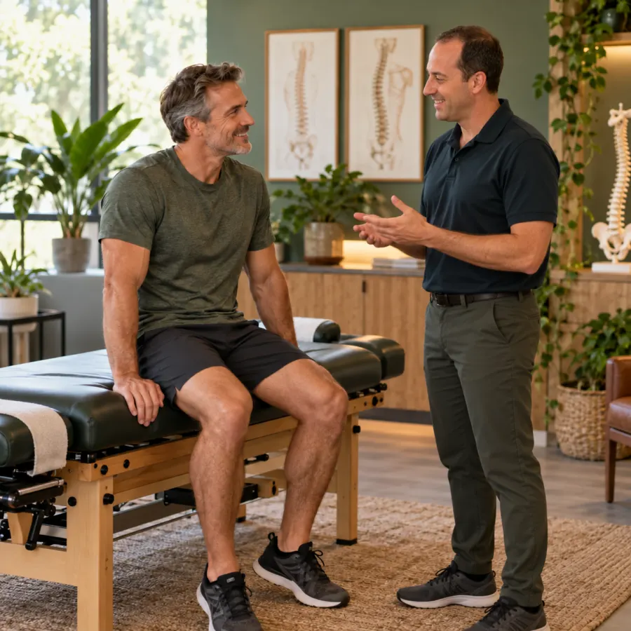
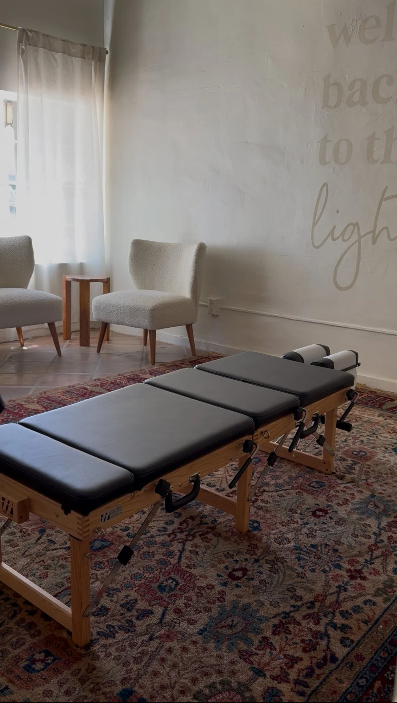
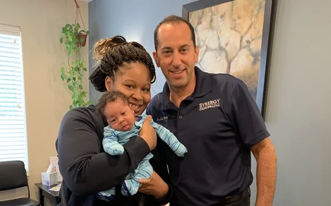

01
Perinatal care
Support for comfort, pelvic balance, mobility, and recovery through pregnancy and postpartum.
Family chiropractic · West Bloomfield, Michigan
Gentle, personalized chiropractic and nervous-system care for mamas, babies, families, and athletes—guided by Dr. Eric Mintz.
The Synergy difference
Every body carries a different story. Dr. Eric takes the time to listen, understand your goals, and tailor each visit to what you need that day.
From bump to baby & beyond
Specific, gentle care designed to support your spine, nervous system, and the life you want to live.
Explore all services ↗Support for comfort, pelvic balance, mobility, and recovery through pregnancy and postpartum.
Gentle, low-force adjustments for growing bodies and developing nervous systems.

Personalized care for movement, posture, stress, comfort, and long-term wellness.
Non-invasive training that supports healthier brainwave patterns, focus, calm, and rest.


Meet your chiropractor
Dr. Eric Mintz brings 25 years of experience in gentle spinal adjustments and dynamical neurofeedback. His work supports children and adults dealing with back pain, neck pain, headaches, sciatica, and the effects of everyday stress.
He also focuses on prenatal and postpartum chiropractic, supporting mothers and babies through pregnancy and recovery.
“Our mission is to transform the health of our city, one nervous system at a time.”More about Dr. Eric ↗
A calmer kind of care
The Synergy office is warm, personal, and intentionally different. Your care begins with conversation, not a cookie-cutter plan.
“Such good energy in this office! I feel seen, heard and welcomed. I’ve never felt better.”Patient Google review
Listen first.
Adjust thoughtfully.
Your first visits
New patients are seen by special appointment, giving Dr. Eric time to understand your history and create a plan around you.
Start your journey ↗Complete your emailed intake forms and arrive 10 minutes early.
Meet Dr. Eric, discuss your history, and complete a physical exam and painless nervous-system scan. Plan on about an hour.
Review your findings and care recommendations, ask questions, and receive your first gentle adjustment.
Visit Synergy
9am–12pm & 3pm–6pm
Healing happens here